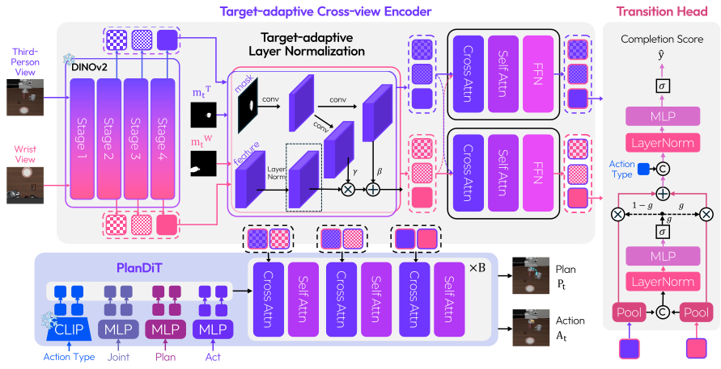

Adapt
Changed layouts and goals
TRAINING SETRelated tasks from LIBERO
EVALUATIONLIBERO-Analogy · Adapt
Adapt learned interactions to changes in scene layout, object arrangement, and task goals.
When the goal changes, existing policies can fall back on familiar demonstration trajectories instead of following the semantics of the current observation and instruction. We introduce RAIN, Region-Aware Interaction Networks, to generalize robotic tasks through reusable, target-region-conditioned interactions.
The benchmark
Train on LIBERO, then evaluate on LIBERO-Analogy: 60 tasks that are not directly seen during training, but can be solved by analogy to learned interactions. The benchmark tests robotic task generalization through Adapt, Compose, and Decompose.
Explore all 60 tasksChanged layouts and goals
TRAINING SETRelated tasks from LIBERO
EVALUATIONLIBERO-Analogy · Adapt
Adapt learned interactions to changes in scene layout, object arrangement, and task goals.
Combine skills into longer tasks
TRAINING SETRelated tasks from LIBERO
EVALUATIONLIBERO-Analogy · Compose
Combine skills learned from LIBERO into new long-horizon tasks.
Execute only the requested part
TRAINING SETRelated tasks from LIBERO
EVALUATIONLIBERO-Analogy · Decompose
Perform the requested part of a learned long-horizon task, leaving the rest of the sequence out.
From instruction to interaction
A VLM plans the subtasks. SAM3 segments and tracks each target. RAIN acts on the region and decides when to move on.
Pick up the potato and place it on the rightmost plate.
Split the task into ordered interactions. For each, specify the action type and target object or region.
Start with the robot’s current observation.
RAIN receives images, target masks, and the current action type. It predicts actions and a transition decision; a Yes activates the next subtask.
Recorded execution with SAM3 tracking and visual target initialization. The animation illustrates the control flow.
The method
Learn how to interact with a target region.

The Target-adaptive Cross-view Encoder (TCE) uses Target-adaptive Layer Normalization (TarLN) to condition each view’s multi-stage visual features on its target mask, then exchanges information across views. PlanDiT jointly predicts target-directed waypoints and action chunks. The Transition Head pools target-region features and combines the views through gated fusion to determine when to advance to the next subtask.
RRS generates smooth approaches to alternative target regions by joining a new trajectory to a recorded reference, preserving its contact-rich interaction. This expands training coverage without collecting additional data.
Experiments
Success rates on LIBERO and LIBERO-Analogy, followed by the VLM comparison.
Scroll horizontally to see all columns →
| Method | Trainable parameters | LIBERO-Analogy | LIBERO | ||||||||
|---|---|---|---|---|---|---|---|---|---|---|---|
| Pre-train | Post-train | Adapt | Compose | Decompose | Avg. | Spatial | Object | Goal | Long | Avg. | |
| Regular VLA models | |||||||||||
| SmolVLA (arXiv'25) | 0.1B | 0.1B | 5.6 | 0.0 | 5.4 | 3.7 | 90.0 | 96.0 | 92.0 | 71.0 | 87.3 |
| OpenVLA-OFT (RSS'25) | 7B | 0.3B | 18.4 | 6.0 | 6.4 | 10.3 | 97.6 | 98.4 | 97.9 | 94.5 | 97.1 |
| GR00T N1.6† (arXiv'25) | 3B | 3B | 27.5 | 10.6 | 9.8 | 16.0 | 96.6 | 100.0 | 95.8 | 93.0 | 96.3 |
| π₀ (RSS'25) | 3B | 3B | 13.6 | 1.1 | 15.5 | 10.1 | 96.8 | 98.8 | 95.8 | 85.2 | 94.2 |
| π₀.₅ (CoRL'25) | 3B | 3B | 57.1 | 10.7 | 7.6 | 25.1 | 98.8 | 98.2 | 98.0 | 92.4 | 96.9 |
| Evo-1 (CVPR'26) | 0.1B | 0.8B | 24.0 | 0.3 | 9.5 | 11.3 | 92.7 | 97.7 | 96.3 | 92.3 | 94.8 |
| World-action models | |||||||||||
| Cosmos Policy (ICLR'26) | - | 2B | 29.1 | 5.0 | 7.1 | 13.7 | 98.1 | 100.0 | 98.2 | 97.6 | 98.5 |
| VLA-JEPA (ECCV'26) | 2.4B | 2.4B | 42.1 | 5.8 | 7.8 | 18.6 | 96.2 | 99.6 | 97.2 | 95.8 | 97.2 |
| Flex-π (arXiv'26) | 6B | 6B | 36.7 | 11.3 | 11.1 | 19.7 | 99.2 | 99.8 | 99.0 | 98.6 | 99.2 |
| VLA models with spatial reasoning | |||||||||||
| InspireVLA (ICRA'26) | 1B | 1B | 29.2 | 0.0 | 66.4 | 31.9 | 90.7 | 94.3 | 88.3 | 73.3 | 86.7 |
| Action-Sketcher (CVPR'26) | 3B | 3B | 35.8 | 2.0 | 6.6 | 14.8 | 97.2 | 99.6 | 94.8 | 96.0 | 96.9 |
| MolmoAct2 (CoRL'26) | 4.4B | 5B | 53.9 | 29.5 | 22.4 | 35.3 | 97.8 | 100.0 | 97.8 | 93.2 | 97.2 |
| RAINQwen3.5-4B + SAM3 | - | 0.2B | 53.3 | 31.0 | 77.5 | 53.9 | 92.4 | 96.8 | 91.2 | 82.4 | 90.7 |
| RAIN (GT masks) | - | 0.2B | 62.4 | 37.1 | 82.7 | 60.7 | 93.6 | 99.0 | 95.2 | 93.6 | 95.4 |
Success rate (%). † Our reproduction with a single model jointly fine-tuned on the four LIBERO suites.
Scroll horizontally to see all columns →
| VLM | LIBERO | LIBERO-Analogy | ||||||||||||||||
|---|---|---|---|---|---|---|---|---|---|---|---|---|---|---|---|---|---|---|
| Spatial | Object | Goal | Long | Overall | Adapt | Compose | Decompose | Overall | ||||||||||
| SR | J&F | SR | J&F | SR | J&F | SR | J&F | SR | J&F | SR | J&F | SR | J&F | SR | J&F | SR | J&F | |
| Qwen3.5-4B | 92.4 | 80.0 | 96.8 | 76.1 | 91.2 | 55.9 | 82.4 | 57.8 | 90.7 | 65.4 | 53.3 | 60.9 | 31.0 | 51.9 | 77.5 | 49.4 | 53.9 | 53.7 |
| Qwen3.5-9B | 91.6 | 80.7 | 95.8 | 75.4 | 90.0 | 55.3 | 81.4 | 57.6 | 89.7 | 65.2 | 53.2 | 59.5 | 30.0 | 52.8 | 77.4 | 49.8 | 53.5 | 54.0 |
| Cosmos-Reason2-8B | 87.6 | 83.3 | 90.2 | 72.2 | 87.4 | 55.7 | 83.0 | 59.8 | 87.1 | 66.3 | 60.6 | 63.4 | 29.9 | 56.4 | 76.2 | 51.8 | 55.6 | 57.3 |
All VLMs use SAM3 for segmentation and tracking. SR (%) and tracking J&F (%) are measured on the same rollouts. J&F pools visible-target observations across both views and tasks.